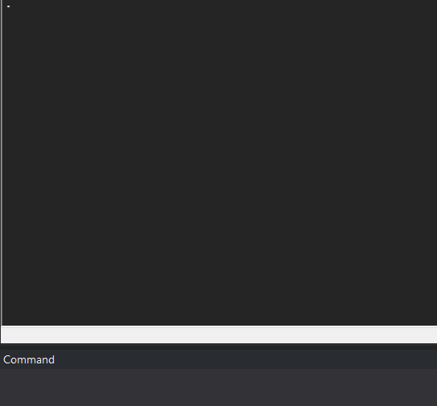

A Completely Useless Command in Stata
While I was running a bit more than 5000 regressions in Stata, a friend of mine asked me what I usually do after running and exporting my regressions; well, I had the brilliant and useless idea of creating a command in Stata that mimics the face I make every time my code fails to run. By typing pikachu you will get the following:

This uses only the display command to make pikachu’s face. In order to install it: you can run the following command:
net install pikachu, from("https://raw.githubusercontent.com/rrmaximiliano/pikachu/main") replaceAnd that’s it. Now, you have pikachu reacting to your failures. Finally, in case you don’t know, the original meme is this one: